Nếu ở trong vùng hoang dã mà các bạn có một chỗ trú ẩn tươm tất, có một bếp lửa để sưởi ấm... thì các bạn sẽ thấy yên tâm và thư giãn tinh thần. Nhất là những lúc mưa gió (mà mưa rừng thì thường kéo dài rất lâu) mà các bạn không có một chỗ trú ẩn cho đàng hoàng thì không những dễ bị bệnh mà còn dễ bị hoảng loạn và suy sụp tinh thần. Hoặc giả các bạn ở những vùng có khí hậu đặc biệt như sa mạc hay băng tuyết mà không biết cách làm những nơi trú ẩn cho thích hợp, thì các bạn khó lòng mà tồn tại được.
Tùy theo điều kiện khí hậu, vật liệu các bạn có sẵn, vật liệu thiên nhiên chung quanh, thời gian chúng ta lưu trú... mà chúng ta kiến tạo một chỗ trú ẩn cho thích hợp.
CHỔ TRÚ ẨN ĐƠN GIẢN
Lều trại:
Nếu các bạn ở trong vùng khí hậu nhiệt đới hay ôn hoà, và có mang theo vải bạt, poncho, võng... để làm trại, thì khá đơn giản để tạo ra một nơi trú ẩn. Lều rất thích hợp cho việc tạm nghỉ qua đêm rồi tiếp tục di chuyển. Tuy nhiên, các bạn muốn dựng một cái lều cho an toàn thì phải lưu ý đến những điều kiện sau:
- Dựng lều ở nơi đất trống trải, bằng phẳng, không có đá lởm chởm, không có rễ cây lớn.
- Dựng lều ở gò đất cao hay hơi thoai thoải cho dễ tháo nước
- Không dựng lều ở chỗ trũng dễ bị ngập úng khi mưa
- Không dựng lều ở lòng suối cạn, nước lũ về không kịp trở tay.
- Không dựng lều ở dưới tàn cây cao, rất nguy hiểm khi mưa gió (sét đánh, cành cây gãy rơi xuống... )
- Không dựng lều nơi có bụi rậm, cỏ cao, rất dễ bị rắn rết
- Tránh hướng gió thốc vào lều
Tiêu chuẩn để hình thành một cái lều:
- Mái lều căng thẳng, không nếp nhăn, để không bị mưa dột
- Các mối dây buộc chắc chắn và dễ tháo
- Làm trên một mô đất, nếu không, phải có mương thoát nước.
Sau đây là hình ảnh một số lều cá nhân cũng tập thể để cho các bạn tham khảo
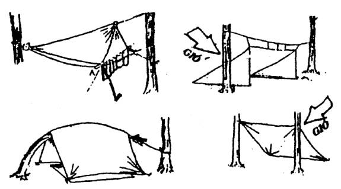
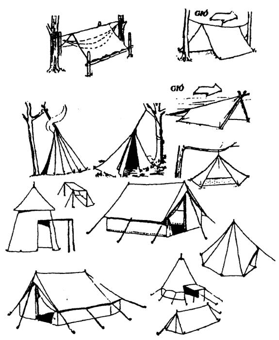
Ẩn núp tạm thời
Trường hợp các bạn không có lều bạt mà trời thì đã tối, các bạn cần phải tìm cho mình một chỗ trú ẩn qua đêm. Các bạn nên tìm chỗ trú ẩn dưới các tàn cây, thân cây đại thụ có những rễ lớn có thể chắn gió, thân cây hay rễ cây lớn đổ ngang, hang đá... hay bẻ gãy một thân cây hoặc dùng dây kéo một tàn cây xuống thấp để che sương gió, các bạn cũng có thể dùng vỏ cây, cành cây, che tạm để qua đệm
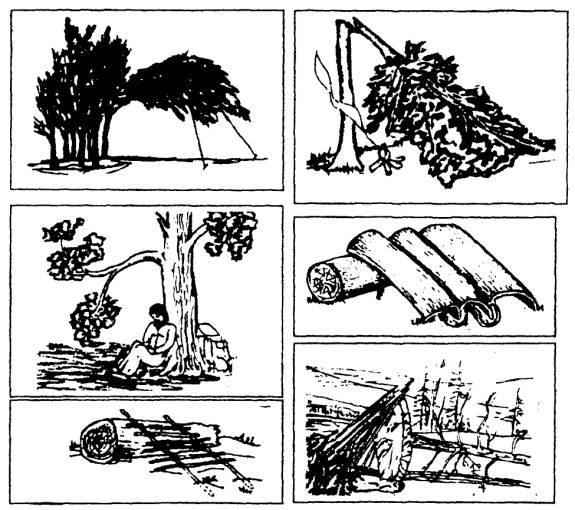
Làm chòi tạm bằng vật liệu thiên nhiên
Nếu các bạn chỉ ở trong một thời gian ngắn trong mùa khô, thì các bạn có thể dùng những vật liệu nhiên nhiên có sẵn tại chỗ như cây, gỗ, cành lá... để làm thành những cái chòi trú ẩn, giàn chống ẩm hay vách chắn gió... như các hình minh hoạ dưới đây.
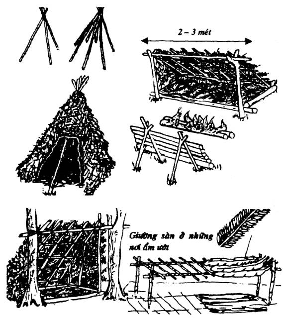
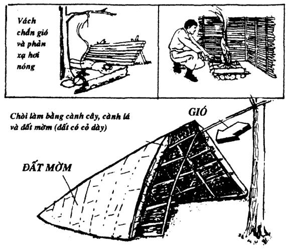
Tuy là chòi đơn giản, nhưng các bạn cũng nên làm ở những nơi cao ráo và thoát nước. Nền lót một lớp lá cây hay cỏ khô ráo. Nếu có một tấm poncho hay nylon thì trải lên để chống hơi ẩm. Ban đêm, nên đốt một đống lửa trước cửa chòi để sưởi ấm, xua đuổi thú dữ, rắn rết, côn trùng... Nhưng phải cẩn thận, dọn sạch lá khô chung quanh, để phòng cháy lan
Chòi làm bằng cây, dây leo và cỏ mờm
Nếu các bạn cần cư trú lâu dài ở một vùng thảo nguyên, ít có cây lớn, hoặc những vùng lạnh giá, nhiều gió... các bạn có thể dựng cho mình một cái chòi bằng cây, dây leo và đất mờm (đất ẩm, có cỏ mọc thật dày, rễ cỏ đan vào nhau để giữ đất).
Muốn thực hiện một cái chòi như thế, các bạn lần lượt tiến hành theo từng bước sau:
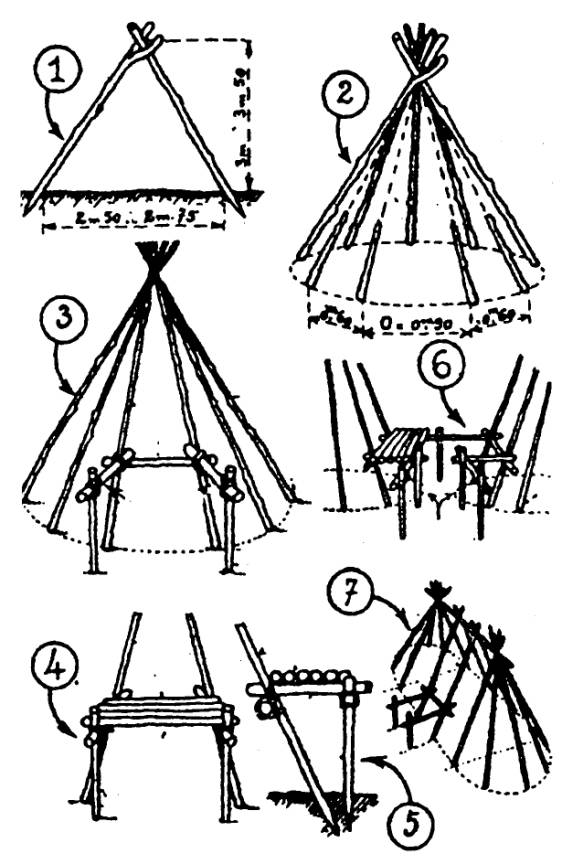
1- Gác giá cây hình tam giác, cao khoảng 3-3,50m, rộng 2,50 - 2,75m
2- Sắp cây hình nón
3- Trổ cửa
4,5,6- Cách tạo cửa
7- Có thể kéo rộng diện tích (nếu cần)
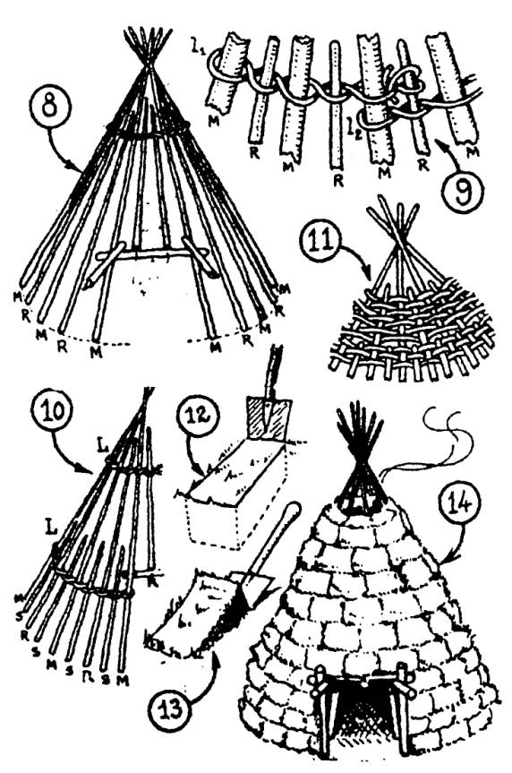
8- Bện thêm hàng cây phụ thứ nhất
9- Cách bện để giữ hàng cây phụ
10- Bện thêm hàng cây phụ thứ hai
11- Cách bện vách
12- Xắn đất mờm
13- Lấy đất mờm
14- Đấp đất mờm chung quanh
Lều du mục
Làm bằng những cây sào dài khoảng 3,5 mét với vải bạt hay da thú may lại. Lều ấm cúng, thích hợp với cuộc sống di chuyển của những người dân du mục vì dựng và tháo dỡ rất nhanh
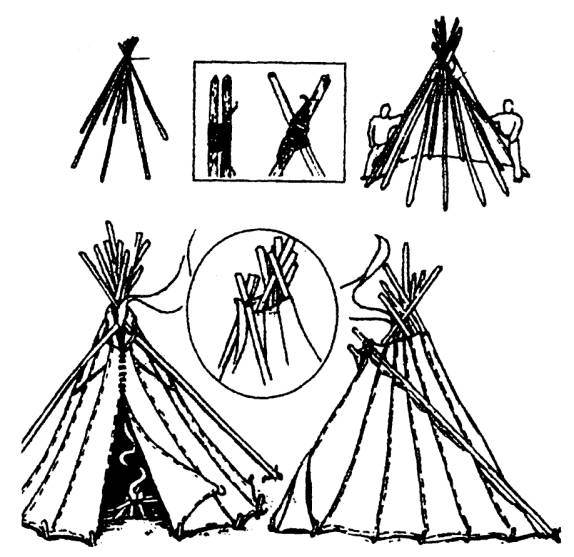
CHÒI VÀ LỀU SÀN
Chọn một chòm cây gần nhau (1), hoặc một cây to có nhiều nhánh lớn (mọc cạnh bìa rừng càng tốt). Làm một cái thang để lên xuống thao tác cho dễ dàng (2).
Lựa những nách nhánh thích hợp để gác đà đỡ, sau đó các bạn ghép sàn (3)
Khi đã có sàn rồi thì phần còn lại khá đơn giản. Nếu có vải bạt, thì các bạn căng lên như cách dựng lều thông thường, bằng không thì chúng ta làm khung và lợp lá (4)
Ở chòi sàn vừa tránh được thú dữ, không bị hơi ẩm của đất, vừa quan sát được rất xa.
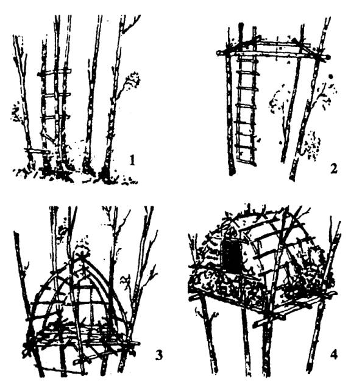
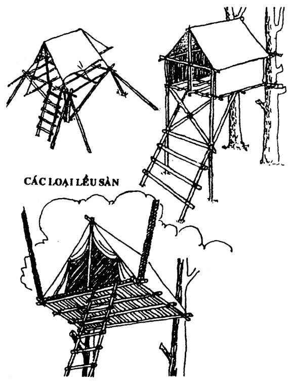
CÁC CÁCH TẠO NƠI TRÚ ẨN KHÁC
Trường hợp các bạn có lều vải, nhưng trong vùng các bạn đang ở thì toàn là lau sậy hay không có cây đủ lớn để có thể dựng được lều, các bạn túm nhiều cây nhỏ vào nhau để làm khung. Sau đó, các bạn lấy tấm bạt trùm lên, dằn kín chung quanh bằng các vật nặng. Như vậy các bạn cũng có một nơi trú ẩn khá tươm tất.
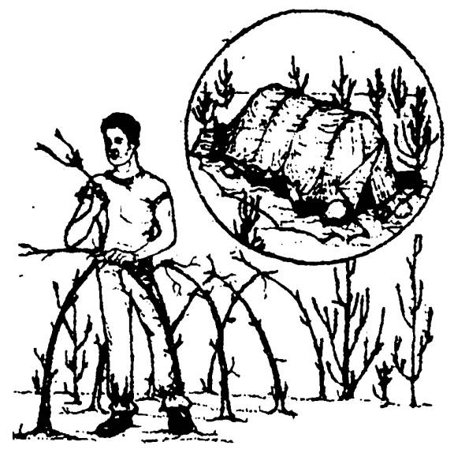
Nếu ở những vùng chỉ toàn là đá, các bạn có thể chất đá cao lên theo hình móng ngựa, trùm bạt lên, chừa cửa ra vào, rồi dằn đá chung quanh. Như vậy là các bạn đã có một nơi trú ẩn chịu được mưa gió
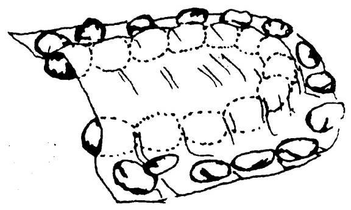
DỰNG NHÀ
Trong trường hợp các bạn dự kiến phải trụ lại một thời gian dài thì chòi không phải là nơi trú ẩn lý tưởng. Các bạn cần phải tìm kiếm vật liệu để dựng lên một căn nhà, ít nữa thì cũng là một túp lều, để có thể chống lại với những mưa nắng, nóng lạnh, gió bão... của thời tiết thất thường nơi vùng hoang dã
Những vật liệu thông thường mà chúng ta có thể tìm thấy là cây, tre, gỗ, tranh, lá, cỏ, vỏ cây, dây rừng... Tuy đa dạng, nhưng cũng đòi hỏi một số kỹ năng cũng như hiểu biết, thì mới có thể dựng được một túp lều vững chãi.
DỰNG NHÀ BẰNG CÂY LÁ
Muốn dựng một cái nhà bằng cây, mái lợp tranh hoặc lá, chúng ta cần phải tìm cây để làm một bộ khung (sườn) cho thật chắc chắn. Sau đó, tùy theo loại tranh hay lá mà chúng ta định lợp để thả “rui mè” hay “đòn tay” cho thích hợp
Thí dụ: Những loại lá phải lợp đứng như lá dừa nước, lá kè, lá cọ, lá dừa, lá buông... thì chúng ta cột cây ngang (đòn tay) nhiều.
Những loại phải lợp ngang như tranh, lá dừa chằm, rơm, cỏ mỹ... thì chúng ta dùng cây đứng (rui) nhiều.
Để cho mái lều không bị dột hay tuột mất khi lợp bằng tranh, rơm, lá dừa, cỏ... các bạn phải biết cách đánh tranh hoặc chằm lá.
Đánh tranh
Đánh tranh tức là dùng hom (là những nan tre nhỏ, dài khoảng 1-1.5 mét và tranh (hay cỏ) gài bện chúng lại với nhau thành từng tấm. Tùy theo vật liệu để đánh, người ta sử dụng 3 loại hom
1- Hom bốn (có 4 nan tre): dùng đánh rơm, sậy hay loại cỏ có cọng to.
2- Hom năm (có 5 nan tre): dùng đánh tranh có cọng lớn hay cỏ cọng vừa
3- Hom sáu (có 6 nan tre): dùng đánh tranh có cọng nhuyễn hay các loại cỏ có cọng nhỏ
Tùy theo từng loại hom, mỗi loại có độ mềm hay cứng khác nhau (thí dụ: hom bốn thì to và cứng hơn hom năm...) nhưng cách đánh thì khá giống nhau
- Hom bốn có 1 cặp và 2 hom lẻ
- Hom năm có 2 cặp và 1 hom lẻ
- Hom 6 có 3 cặp
Dưới đây là cách đánh hom sáu (dễ và thông dụng nhất):
Hom sáu có 3 cặp, khi cài mợt nắm tranh vào, thấy cặp hom nào đang đi lên, thì các bạn tiếp tục kéo lên. Cặp nào đang đi xuống thì tục tiếp đè xuống
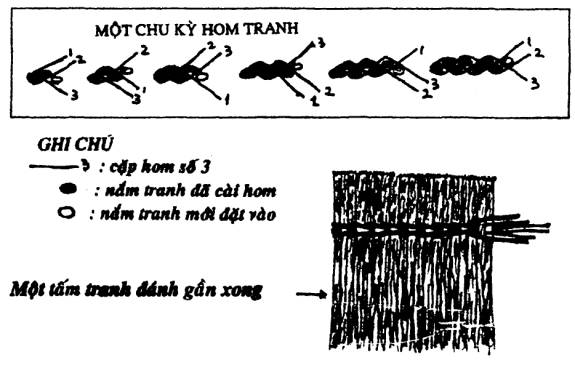
Chằm lá:
Nếu chúng ta dùng lá dừa rời để lợp thì phải biết cách chằm chúng lại với nhau
Dùng một sống lá dừa hay một cây cứng để làm đén gánh. Banh lá dừa ra. Bẻ khoảng 1/4 lá dừa (phía cuống) vắt qua sống lá rồi lấy một cọng lạt chằm lại.
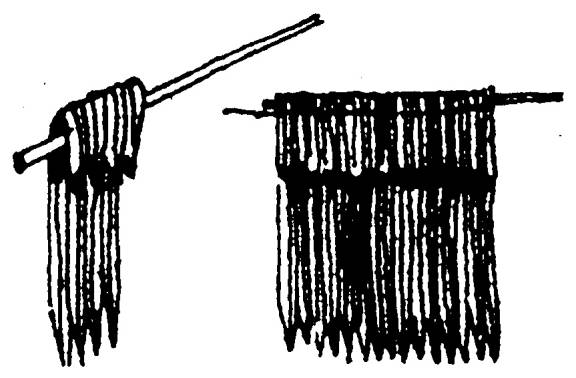
Lợp mái
Khi lợp, các bạn phải lợp từ dưới lên trên, lớp trên phải phủ dài qua lớp dưới. Lợp bằng lá thì để nguyên phiếu hay nguyên tàu mà lợp. Các loại đã đánh hay chằm thành tấm thì lợp nhanh và kín đáo hơn. Tranh rơm hay cỏ, nếu không biết cách đánh thì có thể bó thành từng lọn nhỏ để lợp như các hình minh họa dưới đây
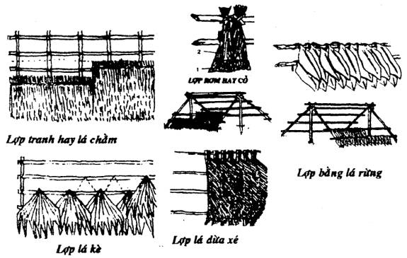
NHÀ BẰNG CÂY GỖ
Ở trong vùng có nhiều cây gỗ thẳng và đều nhau, những người khai hoang, với dụng cụ thô sơ, họ đã dựng lên những căn nhà bằng cây gỗ đơn giản, chắc chắn, và ấm cúng. Để làm được một căn nhà như vậy chỉ cần:
- Đắp một cái nền có diện tích lớn hơn căn nhà dự kiến một chút.
- Hạ một số cây đủ dùng, cắt đúng cỡ mà chúng ta muốn sử dụng.
- Khoét ngàm hai đầu
- Chồng cao theo ý muốn. Trổ cửa
- Làm mái rồi lợp bằng vỏ cây (bu lô) hay tranh lá
- Dùng rêu, cỏ, vỏ cây (tràm)... để xảm kín những chỗ hở của vách (nhất là ở những chỗ hở của vách (nhất là ở những vùng lạnh giá)
Nếu khéo tay, các bạn sẽ có một căn nhà độc đáo và lý tưởng
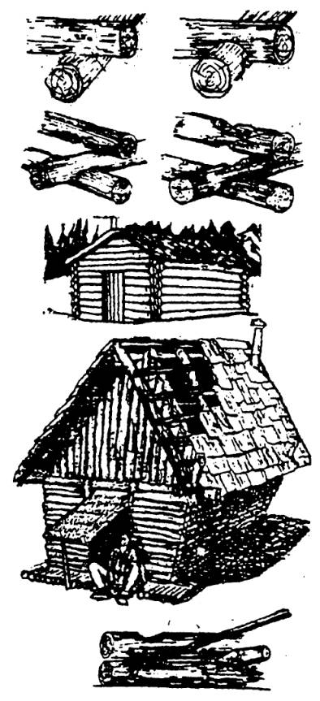
CÁC KIỂU NHÀ CỦA THỔ DÂN
Từ ngàn xưa, những thổ dân ở các vùng xa xôi hẻo lánh, ít giao tiếp với nền văn minh, nhưng họ đã biết tận dụng cây cỏ và những vật liệu thiên nhiên chung quanh, để tạo cho mình những nơi cư trú ấm cúng, an toàn... và một đôi khi rất thẩm mỹ
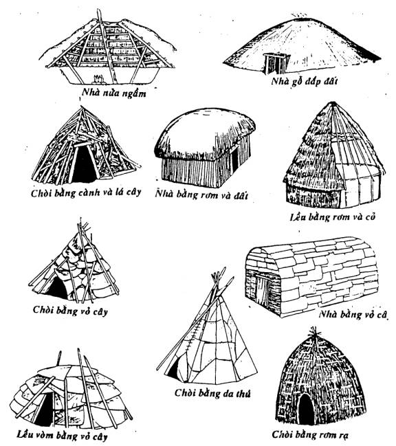
NGÔI NHÀ BĂNG GIÁ
Trong thế giới băng giá của người Eskimo, vì chung quanh họ chỉ có băng tuyết, cho nên họ xây dựng những ngôi nhà bằng băng tuyết gọi là IGLOO
Muốn xây dựng lột igloo, phải có tuyết đóng từng khối dài khoảng 90 cm, rộng khoảng 50-60 cm, dày chừng 15 cm. Một igloo đạt tiêu chuẩn chỉ rộng khoảng 3 mét.
Trước tiên, các bạn xếp lớp băng đầu tiên theo hình vòng tròn có đường kính là 3 mét theo hình trôn ốc, lớp thứ hai đường kính nhỏ hơn một chút, lớp thứ ba nhỏ hơn lớp thứ hai và cứ tiếp tục như thế (Vì vậy mà igoloo có hình vòm). Cuối cùng, dùng một tảng băng hình nêm để khóa vòm. Khoan một lỗ nhỏ trên vòm để thoát khí.
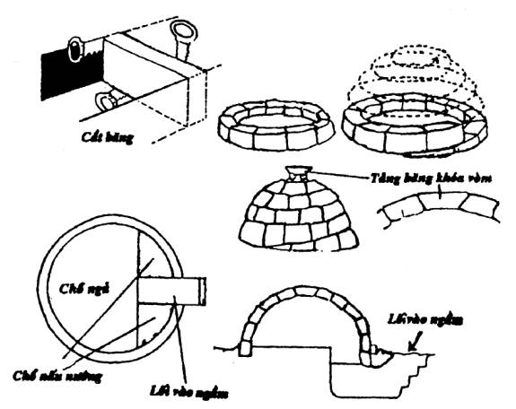
Khi cần nơi trú ẩn tạm, người Eskimo củng làm những đường rãnh, bên trên gác những tảng băng để làm mái. Hoặc làm lều tuyết hay vòm tuyết để tạm trú qua bên khi đi săn hay những lúc cần
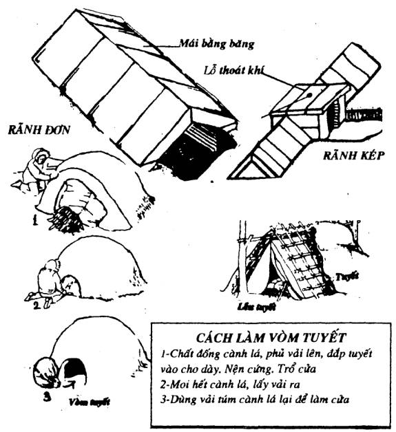
TRÚ ẨN TRONG HANG ĐỘNG
Hang động là một nơi trú ẩn rất lý tưởng. Từ ngàn xưa, ông cha chúng ta đã lấy hang động làm nơi trú ngụ của gia đình hay bộ tộc. Hang động cho chúng ta một nơi ở, một nhiệt độ ổn định và một chỗ khá an toàn.
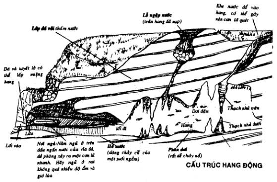
Tìm Hang Động
° Nếu đã tìm thấy một hang động, thì có khả năng tìm thấy những hang động khác.
° Quan sát những nơi bầy dơi bay ra lúc chập tối và bay về lúc hừng sáng.
° Quan sát sự xuất hiện và biến mất của dòng suối
° Dọc theo bờ biển có vách đá nhô cao lên, cũng có thể hình thành do tác động của của sóng
° Ở những vùng nhiệt đới mưa nhiều, nếu thấy có đá vôi lộ thiên thì có thể có hang động gần đó. Kiểm tra các khe nứt, vì đó có thể là lối vào hang động. Để ý đến hơi nước hay khí lạnh tỏa ra từ các đường nứt hay khe đá.
° Theo dấu của loài dế màu nâu vàng (dế thầy chùa) thường dẫn đến một hang động hay là khe nứt dẫn đến hang động.
Đốt lửa trong hang động
- Không đốt lửa trong những hang động nhỏ, các bạn sẽ bị ngộp do mất oxy
- Không nhóm lửa những nơi có phân dơi, vì sẽ gây cháy, nổ...
- Nếu đốt lửa trước cửa hang động, phải cẩn thận để không bị cháy lan
NHỮNG NGUY HIỂM TRONG HANG ĐỘNG
Đề phòng những nguy hiểm thông thường
° Khi vào hang động, cẩn thận với những cư dân thường trú sẵn trong hang như: rắn chuông, dơi... một số động vật và côn trùng khác.
° Gặp những hang động sâu, đừng mạo hiểm đi quá xa, vì các bạn có thể gặp kẽ nứt, vực sâu, dốc trơn trợt, đá lở, lạc lối...
° Cẩn thận vì hang động rất dễ thiếu oxy (Để xác định, các bạn quan sát ngọn đèn lồng hay ngọn đèn cầy, nếu thấy có bắt đầu lụn dần và dường như cố bùng lên, hoặc các bạn cảm thấy khó thở... thì lập tức rời khỏi hang ngay, vì hang đang thiếu dưỡng khí)
° Đi lại trong hang động, nếu có thể thì nên đội nón cứng, vì không biết các bạn sẽ té hay va đầu vào trần hang bất cứ lúc nào
° Nhóm lửa ngay phía ngoài lối vào, làm sao vừa sưởi ấm mà không bị khói làm ngộp vì mất oxy
° Chỗ nằm phải lót các cành cây hay lá, cỏ thật dày để chống ẩm. Tránh các luồng gió trong hang
Ngập lụt trong hang
Có thể hang động mà các bạn đang ở là một cái phểu hứng nước. Nếu vừa có một cơn mưa lớn trong vùng, coi chừng một cơn lũ quét sẽ xảy ra trong hang. Hãy tỉnh táo lắng nghe và quan sát các hiện tượng sau:
- Sự thay đổi cường độ và nhiệt độ của gió
- Sự dâng cao của nước
- Tiếng nước chảy trở nên khác thường
- Nước trở nên đục và nhiều rác hơn
Hoặc nếu bạn thấy bất cứ một hiện tượng khác thường nào, hãy lập tức rời khỏi hang hay trèo lên cao ngay.
CƯ DÂN TRONG HANG ĐỘNG
Hang động được chia làm hai vùng
1- Vùng tranh tối, tranh sáng (chập choạng)
Vùng này thường có chồn, chuột, gấu mèo, gấu nhím, chồn hôi, rắn chuông... và một số động vật côn trùng khác. Chúng ở đây quanh năm để tránh thời tiết hay trốn các loài thú ăn thịt khác
2- Vùng hoàn toàn tối
Vùng này có một hệ động vật rất đặc biệt. Những động vật này gồm có hai nhóm
Nhóm sống suốt đời trong hang: Gồm cá mù, sa giông (cá nhái) tôm hang, ốc sên hang... Những động vật này không có mắt hay mắt bị thoái hóa còn rất nhỏ
Nhóm vừa sống trong hang vừa sống ngoài hang: Gồm thằn lằn, nhện, ruồi nhuế, muỗi...
Dơi: Cư dân nổi tiếng nhất trong hang động là dơi. Loài có vú duy nhất biết bay. Dơi có loài ăn côn trùng, có loài ăn trái cây, có loài vừa ăn côn trùng vừa ăn trái cây. Đặc biệt có loài dơi quỷ (Vampire Bat) chuyên hút máu gia súc và các động vật có kích thước trung bình. Dơi thường không tấn công người, nhưng có thể tông vào bạn trong những hành lang hẹp. Phân dơi rất dễ cháy nổ như thuốc súng, phải cẩn thận.
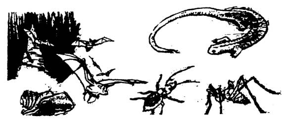